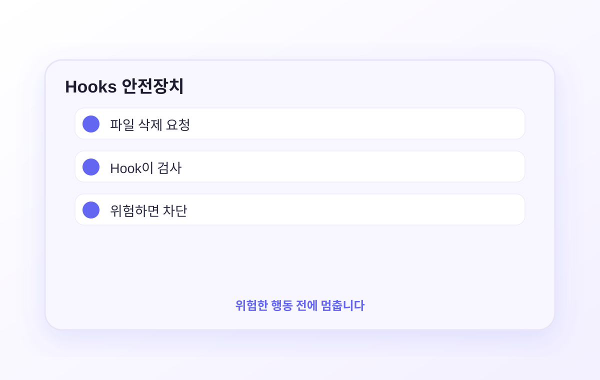
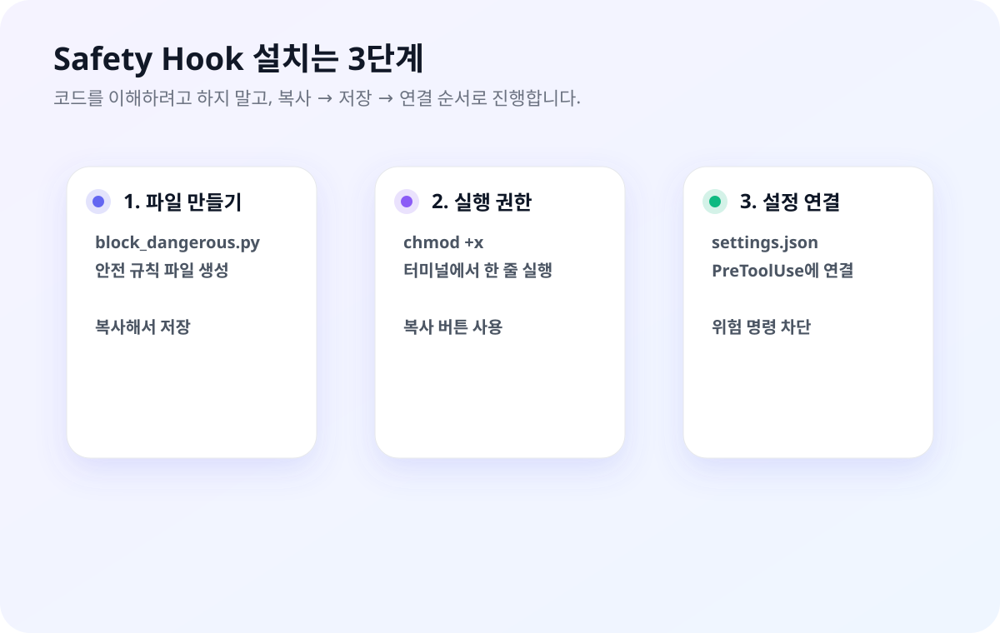

AI에게 파일 작업을 맡길 때 불안했던 적 있나요? Hooks는 Claude가 특정 명령을 실행하기 전에 자동으로 한 번 멈추게 하는 안전 규칙입니다. 위험한 실수를 줄이는 데 도움이 됩니다.
파일 삭제나 민감한 명령처럼 위험한 행동을 실행하기 전에 한 번 멈추게 합니다.

Claude Code는 강력합니다. 파일을 읽고 만들고 수정하고 삭제할 수 있습니다. 그런데 이런 일이 실제로 일어납니다:
Claude가 일부러 그러는 게 아닙니다. AI는 "하라는 대로" 실행하는 데 최선을 다합니다. 그래서 사람이 막아줄 안전장치가 필요합니다.
Hooks는 Claude가 특정 행동을 하기 직전에 자동으로 확인합니다. "이 명령어는 위험하니 막아라"고 지정해두면 Claude가 실행 시도하는 순간 자동으로 차단됩니다.
Claude가 위험한 명령어를 실행할지 말지 스스로 판단합니다. AI의 "판단"에 내 소중한 파일이 달려 있습니다.
정해둔 위험 명령은 규칙으로 먼저 막습니다. AI 판단에만 맡기는 것보다 훨씬 안전하지만, 중요한 작업 전 백업은 여전히 필요합니다.
위험한 명령을 실행하기 전에 멈추는 규칙입니다. 코드를 외우는 게 아니라 “이런 안전장치를 만들 수 있구나”를 이해하면 됩니다.
작업이 끝났을 때 Telegram, Slack, Discord, macOS 알림 등으로 알려주는 Hook은 직접 코딩하지 말고 Claude Code에게 시키는 방식으로 만듭니다.
복잡한 설정을 먼저 외우지 마세요. 비개발자에게 가장 쉬운 방식은 “내가 원하는 안전장치/알림을 설명하고, Claude Code가 파일을 만들게 하는 것”입니다.
아래 문장을 Claude Code에 붙여넣으면 됩니다. Hook 용어를 몰라도, 원하는 결과를 말하면 Claude가 필요한 파일과 설정을 만들어줍니다.
TELEGRAM_BOT_TOKEN, SLACK_WEBHOOK_URL.
Claude Code는 다양한 동작을 할 때 "이벤트"를 발생시킵니다. Hook은 그 이벤트에 반응하는 자동 처리기입니다.
| 이벤트 | 언제 발생 | 주요 용도 |
|---|---|---|
| PreToolUse필수 | Claude가 도구 실행하기 직전 | 위험한 명령어 차단 |
| Stop필수 | Claude가 응답 완료 시 | 작업 완료 알림 |
| Notification | Claude가 사용자 확인 필요 시 | 팝업/소리 알림 |
| PostToolUse | 도구 실행 직후 | 자동 포매팅, 로그 |
| SessionStart | 세션 시작 시 | 업무 컨텍스트 자동 주입 |
이 중에서 PreToolUse(차단)와 Stop(완료 알림) 두 개만 설정하면 대부분의 필요를 커버합니다.
Hook 스크립트가 0으로 종료하면 Claude가 그대로 진행합니다.
Hook이 2로 종료하면 Claude가 멈추고 stderr 메시지를 받아 대안을 찾습니다.
Hook은 settings.json이라는 파일에 등록합니다. 두 가지 위치가 있습니다:
~/.claude/settings.json
내 컴퓨터의 모든 프로젝트에 적용됩니다. Safety Hook처럼 어디서나 필요한 규칙은 여기에 두세요.
.claude/settings.json
현재 폴더(프로젝트)에만 적용됩니다. 이 프로젝트만의 특수 규칙이 필요할 때 사용합니다.
~/.claude/settings.json)만 써도 충분합니다. 이 파일 하나로 Safety Hook + 완료 알림 모두 설정합니다.
여기부터는 “Claude가 만들어줄 수 있는 안전장치의 예시”입니다. 처음부터 코드를 이해하려고 하지 말고, 어떤 위험을 막는지와 테스트 방법만 보면 됩니다.
Python 코드를 이해하려고 하지 않아도 됩니다. 파일 만들기 → 실행 권한 → 설정 연결 순서로 따라가면 됩니다.

파일을 직접 열어서 붙여넣는 대신, 아래 명령어를 터미널에 그대로 붙여넣으면 ~/.claude/hooks/block_dangerous.py 파일이 만들어집니다:
만든 파일에 실행 권한을 줍니다:
~/.claude/settings.json 파일을 열고(없으면 새로 만들고) 아래 내용을 붙여넣습니다:
설정 후 Claude에게 이렇게 물어보세요:
파일의 BLOCKED 목록에 원하는 패턴을 추가할 수 있습니다:
Claude가 오래 걸리는 작업을 처리할 때 계속 쳐다보고 있을 필요가 없습니다. “끝나면 알려줘”를 Hook으로 만드는 편입니다.
코드를 직접 짜기보다, 원하는 알림 방식을 말하고 Claude가 만들게 하세요.
아래는 “작업 완료 시 시스템 소리” 예시입니다. 처음에는 이런 설정이 생긴다고만 이해하면 됩니다:
원하는 소리로 Glass.aiff나 Frog.aiff 부분을 바꾸면 됩니다.
메신저 연동 전에는 화면 팝업만으로도 충분합니다. Claude에게 “소리 대신 팝업으로 바꿔줘”라고 말하면 됩니다:
Safety Hook과 알림 Hook을 직접 합치려면 헷갈립니다. 비개발자는 Claude에게 “두 설정을 충돌 없이 합쳐줘”라고 시키는 방식이 더 안전합니다.
아래 코드는 참고용입니다. 직접 편집보다 위 프롬프트로 Claude에게 합치게 하는 것을 추천합니다:
mkdir -p ~/.claude/hooks 실행했음~/.claude/hooks/block_dangerous.py에 코드 붙여넣기 완료chmod +x ~/.claude/hooks/block_dangerous.py 실행했음Claude Code 안에서 현재 설정된 Hook을 확인할 수 있습니다:
"hooks" 키 부분만 추가하거나 병합하세요. JSON 형식이 망가지지 않도록 주의합니다. /hooks 명령으로 확인할 수 있습니다.
Hook 설정하면서 마주치는 질문들을 모았습니다.
체크할 것 세 가지:
1. 파일 경로 확인: ~/.claude/hooks/block_dangerous.py 경로가 정확한지 확인하세요. 터미널에서 ls ~/.claude/hooks/로 파일이 있는지 확인합니다.
2. 실행 권한 확인: chmod +x ~/.claude/hooks/block_dangerous.py를 다시 실행해보세요.
3. Claude Code 재시작: settings.json을 수정한 뒤엔 Claude Code를 완전히 종료하고 다시 시작해야 반영됩니다.
그래도 안 되면 Claude Code 안에서 /hooks를 입력해 등록 상태를 확인하세요.
block_dangerous.py 파일을 열고 BLOCKED 목록에서 문제가 되는 패턴을 제거하거나 수정하세요.
예를 들어 rm 명령어를 자주 써야 하는 작업이라면 해당 패턴을 주석 처리하면 됩니다:
소리 대신 팝업으로 바꾸거나, 소리 볼륨을 낮추거나, Stop Hook 전체를 지워도 됩니다.
팝업으로 바꾸려면 afplay 명령어를 아래로 교체하세요:
Claude Code를 디버그 모드로 실행하면 Hook 실행 로그를 볼 수 있습니다:
또는 Claude Code 안에서 Ctrl+O를 눌러 도구 실행 로그를 확인하세요.
더 있습니다. 예를 들어:
민감 폴더 보호: customers/, invoices/ 같은 폴더를 수정 자체가 불가능하도록 막을 수 있습니다.
세션 시작 시 컨텍스트 주입: Claude가 새 세션을 시작할 때마다 업무 규칙 파일을 자동으로 읽게 할 수 있습니다.
프롬프트 기반 Hook: 단순 차단이 아니라 "판단이 필요한 상황"에 Claude에게 확인 질문을 던지게 할 수도 있습니다.
하지만 처음에는 Safety Hook + 완료 알림 두 개로 충분합니다. 익숙해지면 cc101.axwith.com의 Hooks 섹션을 참고하세요.
기본적으로는 동작하지만 2026년 4월 현재 일부 이벤트(PostToolUse 등)에서 버그 보고가 있습니다.
이 가이드에서 설정한 PreToolUse(Safety Hook)와 Stop(완료 알림)은 GUI 환경에서도 정상 동작합니다. 가장 중요한 두 Hook이 안정적으로 지원됩니다.
Claude Code 가이드 시리즈 완주!
1편부터 9편까지, 설치부터 고급 자동화까지 모두 완료했습니다.